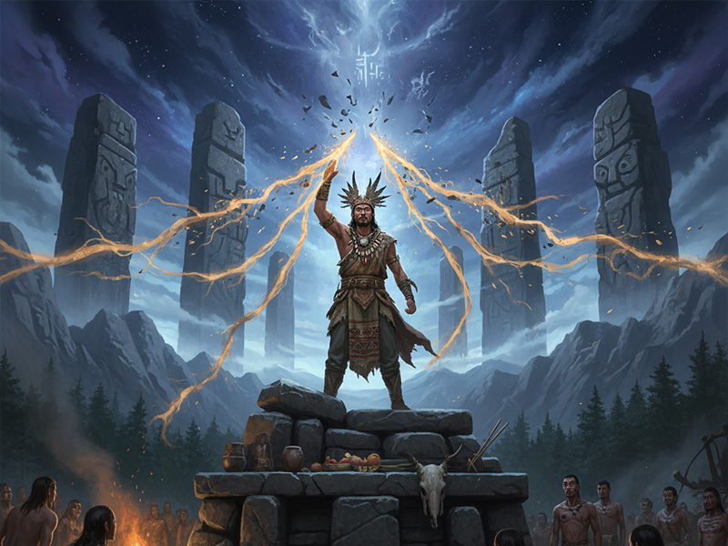

尊号
高阳氏 / 玄帝
地位
五帝之一 / 北方天帝
时代
新石器时代
德行
水德 (色尚黑)
出生地
若水
都城
穷桑 / 商丘
“静渊以有谋，疏通而知事。” — 《史记·五帝本纪》
神祇解读

高阳继统 · 黄帝之孙
颛顼，姓姬，号高阳氏，是黄帝之孙、昌意之子。传说其母昌仆感“瑶光之星贯月如虹”而生下他。他生于若水，后因辅佐伯父少昊有功，被封于高阳。在少昊去世后，颛顼于众多竞争者中脱颖而出，击败了强大的共工氏，继承了华夏部落联盟首领之位，开启了他的统治时代。
绝地天通 · 秩序的重塑
颛顼时代，人神杂糅，民神同位，百姓家家祭祀、人人通天，导致社会秩序混乱，生产废弛。为拨乱反正，颛顼进行了一场深刻的宗教改革，即“绝地天通”。他任命南正重专管祭天拜神之事，北正黎专管民政事务，从而断绝了凡人与天神之间的直接沟通。这一举措，不仅是权力的集中，更是世界规则的重新定义，标志着一个神话与现实分离、秩序与理性崛起的全新纪元。


怒战共工 · 天柱之折
颛顼的改革触动了旧有势力的利益，炎帝后裔、水神共工起兵反对。双方爆发大战，最终共工兵败，在绝望中怒触不周山。天柱为之折断，地维随之崩绝，引发了一场宇宙级别的灾难。这场战争不仅巩固了颛顼的统治，更在神话层面解释了世界天倾西北、地陷东南的格局，是上古时代权力与秩序交替的激烈回响。
人文之功
🏛️
宗教改革
推行“绝地天通”，分离神权与民政，使社会秩序恢复正常，为后世国家治理奠定基础。
⚭
明定婚礼
制定嫁娶制度，禁绝血缘联姻，确立伦理纲常，强调男女有别，推动了家庭与社会的形成。
🗓️
制订历法
创立《颛顼历》，定下四季与二十四节气，指导农业生产。该历法为后世沿用，影响深远，被誉为“历宗”。
🗺️
统一疆域
其统治疆域北至幽陵，南至交趾，西至流沙，东至蟠木，极大地扩展了华夏文明的版图。
🎵
创作乐章
命乐师飞龙效仿八方风声创作《承云》之乐，用以祭祀上帝，丰富了上古时代的礼乐文化。
神祇谱系
解大为的笔记：“颛顼是立维宇宙中最被低估的‘立法者’。他不像伏羲那样定义符号，也不像黄帝那样开疆拓土。他的功绩是‘划定边界’——天与地的边界、神与人的边界、男与女的边界。‘绝地天通’与其说是一场改革，不如说是一次宇宙级的系统重写，它关闭了凡人直接访问‘神域服务器’的权限。他用秩序换取了稳定，但也终结了一个充满奇迹与混乱的英雄时代。他是文明从‘神话纪元’迈向‘历史纪元’的、冷峻而必要的守门人。”